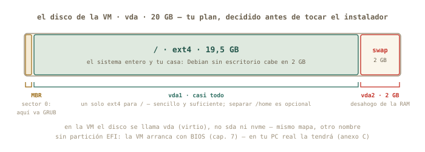
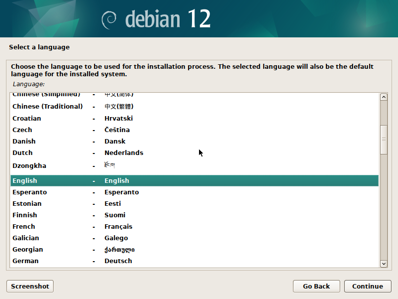
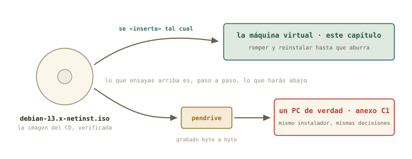
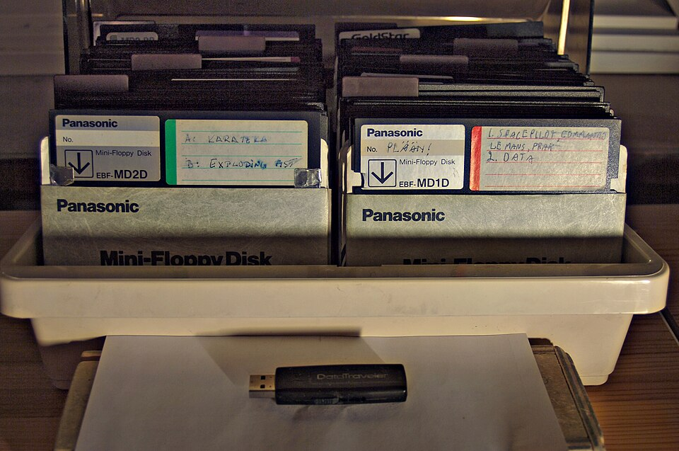

8 Instalar Linux de verdad
Hasta hoy, tu Linux te lo instalaron. Esta sesión lo instalas tú — en la máquina virtual del capítulo 7, sin red de seguridad más que las instantáneas, y sin el botón de «siguiente, siguiente»: eligiendo particiones a mano con el mapa del capítulo 6, viendo dónde va la partición EFI, mirando a GRUB instalarse. Después la romperás a propósito y la reinstalarás, porque la segunda vez tarda un cuarto de hora y la tercera ya aburre. Y saldrás con la lista de comprobación para el día en que lo hagas en un ordenador de verdad.
Al terminar esta sesión sabrás
- Decidir un plan de particiones antes de tocar el instalador — y por qué EFI + raíz + swap es el plan que vale casi siempre.
- Recorrer el instalador de Debian entero: idioma, red, usuarios, particionado manual, espejo, selección de programas, GRUB.
- Por qué se deja la contraseña de
rootvacía, y qué consigue eso. - Instalar un Debian sin escritorio — un servidor — con SSH desde el primer día, y comprobar que respira.
- Qué se rompe cuando se rompe el arranque, y cómo la instantánea lo convierte en un susto de cinco segundos.
- Qué cambia — y qué no — cuando lo hagas en un PC real desde un pendrive.
8.1 El plan, antes que el instalador
Los instaladores modernos permiten no pensar: «usar el disco entero», siguiente, siguiente. Hoy no vas a pulsar ese botón, y la razón es la misma por la que un físico no arranca un montaje sin un esquema: cuando lo hagas en tu PC de verdad, con un Windows al lado o un disco con datos, «usar el disco entero» será exactamente lo que no quieres. Se decide el plan en papel, se ejecuta en la VM, se repite hasta que sea rutina.
Lo que instalas: Debian 13 — la madre de tu Mint (capítulo 5) —, imagen netinst, sin escritorio. Sí, sin escritorio: un servidor al que hablarás por terminal y, a partir del capítulo 12, por SSH. Es lo que te encontrarás en el clúster y en la nube, y es lo que construye el proyecto final. Nombre de la máquina: debian-lab. Usuario: el tuyo.

Tres particiones, y cada decisión la tomas con el capítulo 6 en la cabeza: la EFI (512 MB, FAT32, montada en /boot/efi) es el buzón donde GRUB dejará su llave; la raíz (/, ext4) se lleva casi todo; y swap (2 GB) es el desahogo de la RAM cuando se llena — en una VM de 4 GB, un seguro barato. ¿Y /home separado? Es una opción respetable — permite reinstalar el sistema sin tocar tus datos — pero complica el reparto de espacio; para el taller, un solo / basta. Un detalle nuevo: dentro de la VM el disco no se llama sda ni nvme0n1 sino vda — virtio disk, el disco de mentira del hipervisor. Mismo mapa, otro nombre.
8.2 Arrancar el instalador
Abre virt-manager, selecciona debian-lab y pulsa el triángulo de Ejecutar (o, desde la terminal, virsh start debian-lab y abre su ventana). La ISO sigue en la bandeja, así que la VM arranca en el menú del instalador: Graphical install, Install, y opciones avanzadas. Los dos primeros son el mismo instalador con dos caras — la gráfica es más cómoda con ratón; la de texto funciona en cualquier sitio, incluida una consola remota sin ventanas. Elige la que quieras; las pantallas y las decisiones son idénticas.

Las primeras pantallas son las fáciles, y una de ellas esconde la decisión más importante del día:
- Idioma, país, teclado: español, España, español. (Un profesional a veces deja el sistema en inglés para buscar errores en internet con más éxito; para el curso, español, que es como verás los mensajes en los ejemplos.)
- Red: la VM recibe dirección sola de la red NAT — es el DHCP del capítulo 10, adelantado. Nombre de la máquina:
debian-lab. Dominio: vacío. - Contraseña de root: déjala vacía. No es un descuido, es un truco documentado de Debian: si
rootqueda sin contraseña, el instalador desactiva la cuenta de root y añade a tu usuario al gruposudo— exactamente el modelo de tu Mint, el del capítulo- Si pones contraseña, tendrás un root activo y un usuario sin sudo, y el primer
sudo aptte dará un disgusto.
- Si pones contraseña, tendrás un root activo y un usuario sin sudo, y el primer
- Tu usuario: nombre completo, nombre de usuario (
marcos), contraseña. Zona horaria: la tuya.
8.3 Particionar a mano
Llega la pantalla que asusta a todo el mundo, y que tú vas a leer con calma. Elige Manual. Verás el disco — vda, 20 GB, «Virtio Block Device» — sin particiones. El procedimiento, pantalla a pantalla:
- Selecciona el disco
vda→ Crear una nueva tabla de particiones vacía → sí → tipo gpt (la tabla moderna que UEFI espera, capítulo 6). Aparece una línea «ESPACIO LIBRE» de 20 GB. - Selecciona el espacio libre → Crear una partición nueva → tamaño
512 MB→ al principio → Utilizar como: Partición del sistema EFI → Se ha terminado de definir la partición. - Espacio libre otra vez → partición nueva → tamaño
17.5 GB(o lo que quede menos 2 GB) → Utilizar como: ext4 → Punto de montaje:/→ terminar. - Espacio libre restante → partición nueva → todo lo que queda → Utilizar como: área de intercambio (swap) → terminar.
- Compara la tabla con la figura:
vda1EFI,vda2ext4/,vda3swap. Finalizar el particionado y escribir los cambios en el disco → «¿Desea escribir los cambios?» → Sí.
Ese último Sí es el punto sin retorno de cualquier instalación: a partir de ahí el disco se formatea. En tu VM el disco es un fichero vacío y el susto es gratis; en tu PC real será el momento de haber leído tres veces qué disco has elegido — vuelve a esta frase cuando llegue el día.
△ Cuidado · Lo que este capítulo no hace en tu Mint
Ni una sola orden de hoy se ejecuta en tu máquina real: todo pasa dentro de la ventana de debian-lab. Si en algún momento ves el prompt marcos@portatil, estás fuera de la VM — para en seco. Dentro, el prompt dirá marcos@debian-lab. Ese nombre de máquina que pusiste en el instalador acaba de convertirse en tu cinturón de seguridad.
8.4 Espejo, programas y GRUB
Con el disco listo, el instalador copia el sistema base y hace las últimas preguntas:
- Réplica de Debian (mirror, el espejo): el repositorio del capítulo 5, en su versión Debian.
deb.debian.orgsirve; proxy, vacío. De aquí descargará todo lo que no cabía en la netinst. - Concurso de popularidad: no.
- Selección de programas — la pantalla decisiva del servidor. Desmarca Entorno de escritorio Debian y GNOME (vienen marcados). Marca Servidor SSH — el bloque E te lo agradecerá — y Utilidades estándar del sistema. Nada más.
- Cargador de arranque: arrancaste la VM en modo UEFI, así que GRUB se instala solo en la partición EFI que creaste. Si pregunta por «forzar la instalación en la ruta de medios extraíbles», no.
Reinicia cuando lo pida. La ISO se expulsa sola, y en el primer arranque desde el disco recién estrenado verás, durante unos segundos, el menú de GRUB — el eslabón del capítulo 6 que hoy has puesto tú. Es el mismo menú de la figura anterior, pero ahora sirve tu sistema en vez del instalador.
8.5 El primer arranque: comprobar que respira
Sin escritorio, el sistema te recibe con una consola de texto y un login:. Entra con tu usuario, y pásale la revisión del bloque B — son tus comandos, sobre tu instalación:
marcos@debian-lab:~$ lsblk
NAME MAJ:MIN RM SIZE RO TYPE MOUNTPOINTS
vda 254:0 0 20G 0 disk
├─vda1 254:1 0 512M 0 part /boot/efi
├─vda2 254:2 0 17,5G 0 part /
└─vda3 254:3 0 2G 0 part [SWAP]
marcos@debian-lab:~$ df -h /
S.ficheros Tamaño Usados Disp Uso% Montado en
/dev/vda2 17G 1,3G 15G 8% /
marcos@debian-lab:~$ ip a | grep "inet "
inet 127.0.0.1/8 scope host lo
inet 192.168.122.15/24 brd 192.168.122.255 scope global dynamic enp1s0
marcos@debian-lab:~$ systemctl status ssh | head -3
● ssh.service - OpenBSD Secure Shell server
Loaded: loaded (/lib/systemd/system/ssh.service; enabled)
Active: active (running) since Tue 2026-08-25 19:02:11 CESTLéelo como el parte de un experimento que ha salido bien: las tres particiones montadas donde las pusiste; un sistema completo que ocupa 1,3 GB; una dirección 192.168.122.x — la red NAT del capítulo 7, repartida por tu Mint —; y un servidor SSH ya activo, esperando al capítulo 12. Pon la instalación al día con el gesto del capítulo 5 (sudo apt update && sudo apt upgrade) — y fíjate en que sudo funciona: el truco de la contraseña vacía de root ha hecho su efecto.
Y ahora, el protocolo del capítulo 7. Apaga la máquina con sudo poweroff — un servidor se apaga desde dentro, no desde el botón —, y en virt-manager crea la instantánea recien-instalado. Es el punto de retorno del resto del curso.
✚ Truco · Dos cosas que verás y no te esperabas
La consola de texto no muestra nada mientras tecleas la contraseña — ni asteriscos: es normal, escribe y pulsa Intro. Y la ventana de la VM se queda con tu ratón y tu teclado cuando haces clic dentro: la tecla para soltarlos es Ctrl derecho (virt-manager lo indica en la barra de título). Ambas cosas son mucho más frecuentes de lo que parece: la primera pasa en todo servidor, la segunda en toda VM.
8.6 Romper, mirar, restaurar
Hay una cosa que un instalador nunca enseña: qué pasa cuando se rompe. Hoy sí. Restaura la instantánea si has hecho pruebas, arranca la VM, entra, y haz lo impensable — con el capítulo 6 en mente:
marcos@debian-lab:~$ sudo rm -rf /boot
marcos@debian-lab:~$ ls /boot
ls: no se puede acceder a '/boot': No existe el fichero o el directorio
marcos@debian-lab:~$ sudo rebootAcabas de borrar el kernel y la configuración de GRUB. El sistema sigue funcionando hasta que se apaga: todo lo que necesitaba ya estaba cargado en RAM. Pero al reiniciar, la cadena del capítulo 6 se rompe en el segundo eslabón: GRUB no encuentra el kernel, y te quedas en su consola de emergencia (grub>) o en un aviso del UEFI. Míralo bien. Es la pantalla que aterroriza a quien no sabe qué es GRUB — y tú sabes exactamente qué falta y por qué.
Ahora, desde virt-manager: Forzar apagado → Instantáneas → recien-instalado → Ejecutar. Arranca. Cinco segundos, y /boot está de vuelta como si nada. Ese es el bloque C entero en una escena: el miedo a romper ha desaparecido porque romper cuesta cinco segundos.
8.7 Del ensayo al ordenador de verdad
Todo lo que has hecho hoy es, paso a paso, lo que harás el día que instales Linux en un PC físico. Cambian tres cosas — la ISO viaja en un pendrive, el disco tiene nombre real y quizá un Windows dentro, y no hay instantánea que te salve — y por eso existe el anexo C1: la lista de comprobación completa para ese día, con la grabación del pendrive por la vía gráfica y por terminal.

◷ Historia · De ochenta disquetes a un pendrive
Instalar Linux en 1994 empezaba por descargar decenas de imágenes de disquete — Slackware llegó a necesitar más de cincuenta, en series con nombres como A, AP, D, N — y grabarlas una a una, rezando para que ninguna viniera mal. El CD (1995) lo redujo a un disco; el pendrive de arranque, a un fichero copiado byte a byte. Lo que no ha cambiado en treinta años es la parte que hoy has practicado: decidir las particiones, elegir el cargador de arranque, y aguantar el pulso en el «¿desea escribir los cambios?». Los soportes se encogen; las decisiones son las mismas.

8.8 Práctica: la sala de operaciones
Cuaderno en marcha en tu Mint (script sesion08.log): anota ahí tus decisiones y tiempos; dentro de la VM no hace falta grabar nada.
Nivel 1 · Lo esencial
Ejercicio 8.1 · El plan, por escrito
Antes de arrancar el instalador, escribe en tu cuaderno la tabla de particiones que vas a crear: nombre de dispositivo, tamaño, sistema de ficheros y punto de montaje de cada una. Y dos decisiones más: nombre de la máquina y contraseña de root (vacía, y por qué). Pista: la figura del plan tiene todo; el «por qué» de root está en la sección de arrancar el instalador.
vda1 512 MB · FAT32 · /boot/efi (EFI) — vda2 ~17,5 GB · ext4 · / — vda3 2 GB · swap. Máquina debian-lab. Root vacío: Debian desactiva root y da sudo a tu usuario, como en Mint.
Por qué así — El plan escrito es lo que separa una instalación de una apuesta. En el PC real añadirás una columna: «¿qué había antes en esa partición?» — y ahí es donde el hábito te salvará los datos.
Ejercicio 8.2 · La instalación
Ejecuta la instalación completa siguiendo las secciones del capítulo — particionado manual, sin escritorio, con servidor SSH — y anota en el cuaderno cuánto ha tardado y en qué pantalla dudaste. Pista: si en el particionado te pierdes, «Deshacer los cambios realizados a las particiones» vuelve al principio sin coste; y si algo sale mal de verdad, Forzar apagado* y volver a arrancar la VM reinicia el instalador desde cero.*
Entre 20 y 40 minutos la primera vez, gran parte esperando descargas del espejo. Las dudas típicas: la pantalla de root (vacío), el tamaño de la raíz (lo que quede menos el swap) y la selección de programas (desmarcar el escritorio). Al terminar, el login: en consola de texto es la señal de éxito.
Por qué así — La primera instalación siempre es lenta y torpe; la segunda (ejercicio 8.5) es donde se nota que has aprendido. Por eso el diseño de este capítulo insiste en repetir.
Ejercicio 8.3 · El parte del primer arranque
Entra en debian-lab y ejecuta la revisión del capítulo: lsblk, df -h /, ip a | grep "inet " y systemctl status ssh. Copia los cuatro resultados al cuaderno y compáralos con tu plan del 8.1. Después, actualiza el sistema con apt. Pista: son exactamente los comandos de los capítulos 5 y 6, ahora sobre una instalación tuya.
Las tres particiones montadas según el plan; alrededor de 1,3 GB usados; una dirección 192.168.122.x; y ssh.service en active (running). sudo apt update && sudo apt upgrade debe funcionar sin pedir nada raro: la prueba de que el truco de root funcionó.
Por qué así — Cada comando verifica una decisión del instalador: particiones, tamaño, red, SSH. Un físico no da por bueno un montaje sin medirlo; tú tampoco das por buena una instalación.
Ejercicio 8.4 · La instantánea que importa
Apaga la VM desde dentro (sudo poweroff) y crea la instantánea recien-instalado. Compruébala con virsh desde tu Mint. Pista: capítulo 7, sección de instantáneas — con la máquina apagada, la instantánea guarda el disco y es la más limpia de restaurar.
Ver → Instantáneas → + → nombre recien-instalado. En Mint: virsh snapshot-list debian-lab la muestra con estado shutoff.
Por qué así — Es el punto de retorno de todo lo que queda de curso: los experimentos de red del bloque D y el servidor del bloque E parten de aquí. Restaurarla es siempre una opción legítima.
Nivel 2 · El reto
Ejercicio 8.5 · Romper el arranque
Con la instantánea a salvo: borra /boot, reinicia, y observa exactamente dónde se rompe la cadena del capítulo 6. Describe la pantalla en el cuaderno. Después restaura la instantánea y comprueba que /boot está de vuelta. Pista: la orden está en la sección «Romper, mirar, restaurar». Antes de teclearla, mira el prompt: debe decir debian-lab.
sudo rm -rf /boot, sudo reboot → GRUB arranca (su llave sigue en la partición EFI, que no has tocado) pero no encuentra el kernel: te deja en grub> o en un error de «file not found». Forzar apagado → restaurar recien-instalado → ls /boot muestra el kernel (vmlinuz-…) y la carpeta grub como si nada.
Por qué así — Ver romperse un eslabón concreto de la cadena convierte «no arranca» en «falta el kernel, GRUB sigue ahí»: un diagnóstico. Y la restauración es la demostración práctica de para qué sirve el bloque C.
Ejercicio 8.6 · La segunda instalación, cronometrada
Borra la máquina entera desde virt-manager (Eliminar, marcando borrar el disco), vuelve al capítulo 7 para crearla de nuevo, y reinstala Debian desde cero — esta vez con /home en su propia partición de 5 GB — sin mirar el capítulo más que para lo imprescindible. Anota el tiempo. Pista: el plan cambia en una línea: la raíz se queda con ~12,5 GB y /home recibe 5 GB, ext4, punto de montaje /home. Crea las cuatro particiones en orden: EFI, raíz, home, swap.
Normalmente la mitad del tiempo de la primera vez, y lsblk mostrará vda3 montado en /home. Renueva la instantánea recien-instalado sobre esta máquina — es la definitiva.
Por qué así — «Romperla y reinstalar hasta que aburra» era el objetivo declarado del capítulo. La variante del /home separado enseña el matiz que más se discute en foros — y te deja decidir con criterio propio, que es lo único que cuenta.
Nivel 3 · Opcional · el pendrive real
Ejercicio 8.7 · El pendrive de arranque (sin instalar nada)
Siguiendo el anexo C1, graba la ISO en un pendrive que puedas borrar, arranca tu portátil desde él hasta el menú del instalador — y sal sin elegir nada: apaga y arranca de nuevo tu Mint. Objetivo: haber visto el menú de arranque del UEFI y el instalador en hardware real sin tocar un solo byte de tu disco. Pista: en el anexo tienes las dos vías — la aplicación «Discos» de Mint y la orden dd — y la regla de oro: lsblk antes y después de pinchar el pendrive para estar seguro de su nombre.
El pendrive aparece como sda (o sdb) al pinchar; se graba con «Discos → Restaurar imagen de disco» o con sudo dd if=debian….iso of=/dev/sdX bs=4M status=progress (con la X correcta, verificada dos veces); se reinicia pulsando la tecla del menú de arranque (F12, F2 o Esc según la marca) y se elige el pendrive. Verás el mismo menú que en la VM; Ctrl+Alt+Supr o apagar te devuelve a Mint intacto.
Por qué así — Es el ensayo general con el vestuario de verdad, y la única parte del capítulo con un riesgo real: equivocar la letra del pendrive en dd borra el disco equivocado. Por eso la vía gráfica es perfectamente honorable — elige por su nombre y tamaño, sin letras — y por eso el anexo insiste en comprobar dos veces.
8.9 Autocomprobación
Marca una respuesta por pregunta; la corrección es inmediata.
La imagen «netinst» de Debian…
Dejar vacía la contraseña de root en el instalador de Debian…
sudo. Con contraseña, tendrías root activo y un usuario sin sudo.En una instalación UEFI, GRUB deja su llave de arranque en…
/boot rompe el kernel pero no a GRUB.Marcaste «Servidor SSH» en la selección de programas para…
Tras sudo rm -rf /boot, el sistema sigue funcionando hasta reiniciar porque…
/boot y no lo encuentra: cadena rota en el segundo eslabón.sudo, rm borra de verdad. Lo que te mantiene vivo es que el kernel ya está en RAM — hasta el próximo arranque.La diferencia más peligrosa entre instalar en la VM y en un PC real es…
Autocomprobación (test de la sección 8.9) — Respuestas: 1 b · 2 b · 3 a · 4 b · 5 a · 6 b.
La próxima sesión
Tienes un servidor instalado por ti, con una dirección 192.168.122.x que todavía no sabes leer. El bloque D empieza ahí: aprenderás qué es una dirección IP, qué es esa máscara /24 y quién reparte las direcciones en tu casa, y harás la expedición al router de la compañía, en modo solo lectura, para censar todos los aparatos que viven en tu red. Guarda sesion08.log: bloque C completo.
cap. 8 v0.1 · piloto — anota tiempo real invertido, dudas y erratas junto a tu sesion08.log